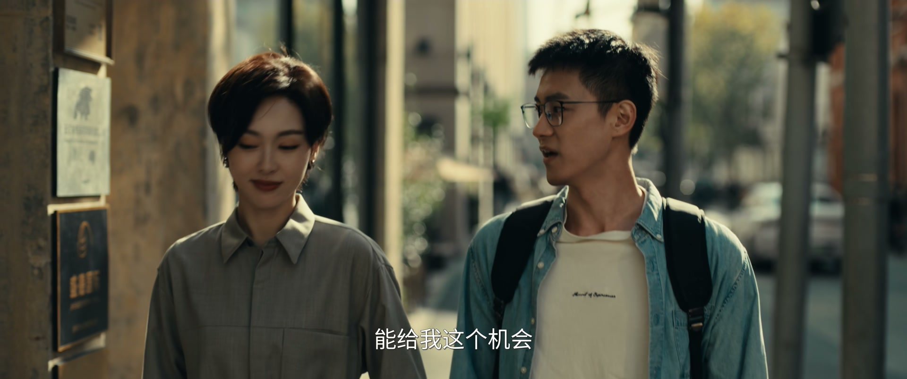
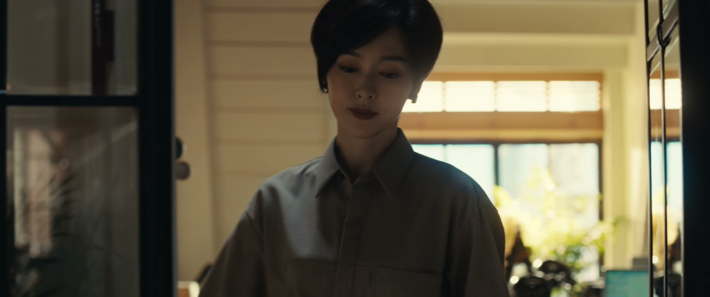
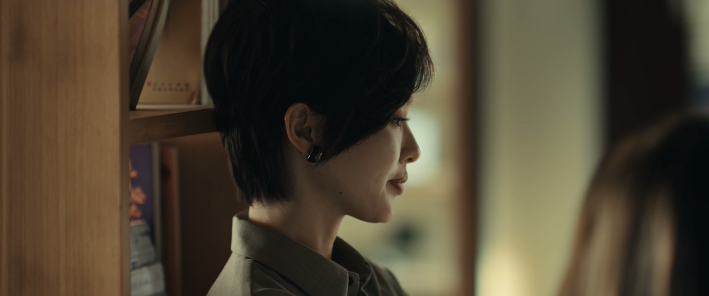
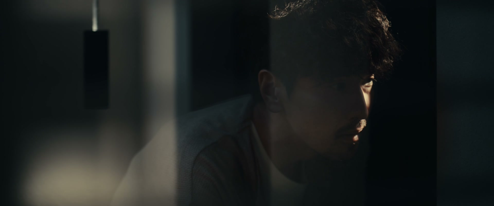
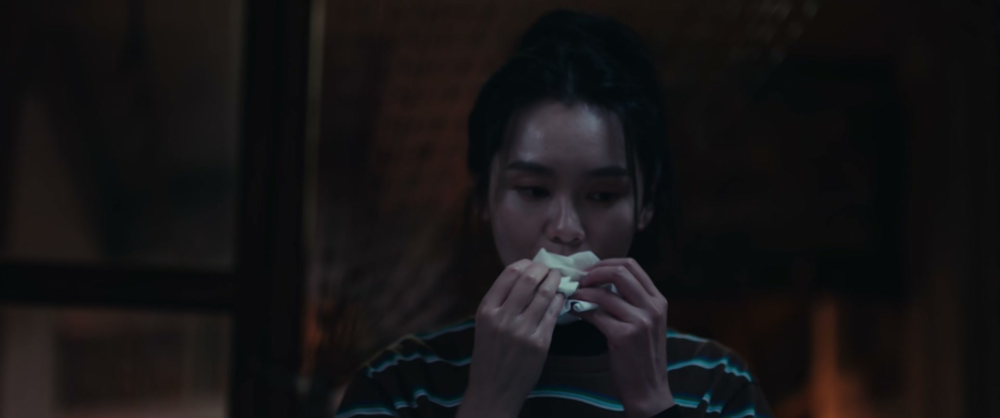
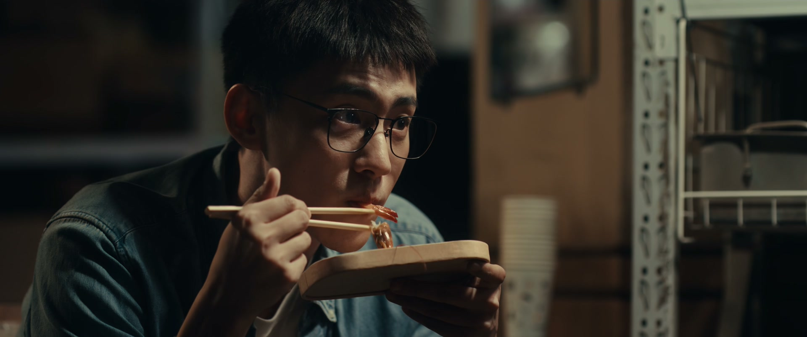
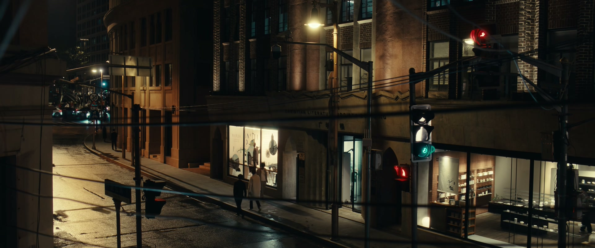
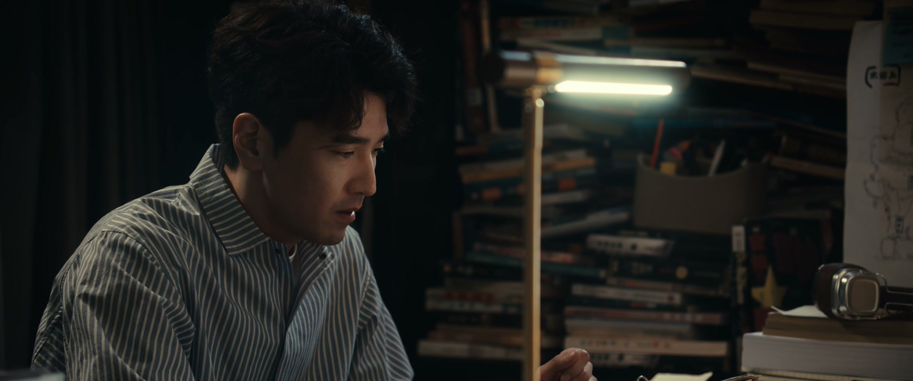
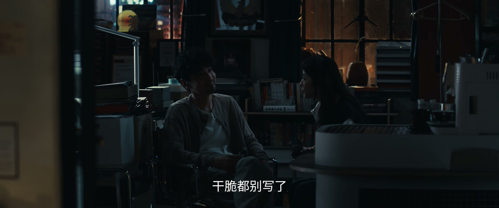

「机会只有一组」，所以永远别只准备一组
情境：胡言输在项目被提前上线，几个月的试写白费。
遇到这种情况，可以这样做
- 成败常输在时机，不输在才华。
- 把每一次比稿都当成练兵，落选不是清零。
- 平台永远在备份，别把「被选中」当成铁饭碗。

Drama Recap · 剧情图文总结
第 6 集 · 瓜洲失守
孤烟终于能光明正大地写《私有故人罪》，最关键的瓜洲线路却因被偷拍盗用而作废——绕道的路不好看，重写只剩三天。何韩当着全行业说「好看，但恐怕会烂尾」，咪咪追到三十一楼堵门想复合，展翘把合同从五年签到了八年。所有人的日子，都在这一天起了变化
「好看，但是恐怕会烂尾。」何韩在镜头前轻飘飘一句话，把孤烟的《私有故人罪》顶到风口浪尖。可真正让展翘失眠的，是那张被人偷拍的瓜洲线路图——故事的地图塌了，作者的自信也塌了。
第 6 集，孤烟正式签约入职。展翘向落选的作者胡言解释比稿的规则：你试写的开头不比孤烟差，但项目被提前上线，机会只有一组；试写《私有故人罪》的事要签保密协议，而下一个故事，会有五个人同时开写。
剧里的鸡毛蒜皮，往往是人生的缩影。这些情节不只是故事——当你在现实中遇到同样的处境时，它们能提醒你：先做什么、别做什么、怎么说才有效。
情境：胡言输在项目被提前上线，几个月的试写白费。
情境：孤烟不看合同就签字，贝律师提醒展翘要小心。
情境：何韩一句「会烂尾」，点燃了整个行业。
情境：孤烟一夜成名，三妹说自己才不要变成另一个人。
情境：掌珠不愿接受后妈，何韩劝她改变不了爸爸，就先把自己变强。
情境：瓜洲线路被抄、绕道不好看，孤烟偏要三天内重写它。
展翘向落选的作者胡言解释：你不比孤烟写得差，这个开头甚至更好，只不过他写得快、项目又被提前上线。她告诉他，机会只有一组，「在命运面前，从某种意义上来说，算是公平的」。
她拿出两份协议：第一份是《私有故人罪》试写的保密协议，第二份要等他签完才给看——下一个故事的策划案，将有五个人同时比稿。
关键台词 · KEY QUOTES

员工们凑在一起八卦：林总培养孤烟至少一年了，要不是凌奕凯突然跳槽，这张牌还得继续藏下去；有人感叹「一将功成万骨枯」，也有人自嘲老板不是傻白甜，是个心机女。
展翘把孤烟送到公司，Cindy 带他参观登记。孤烟只认林展翘一个人，掌珠想加他微信，被他一句「我只跟林展翘联系」噎了回去。
关键台词 · KEY QUOTES
公司大会上，展翘正式介绍孤烟：过去一年多两人还在磨合，所以约定暂时保持沉默；现在可以透露，前一百二十章已经完成，影视改编的版权正在洽谈之中。
孤烟当众把功劳归给林总：「作者名字虽然写的是我的，但大部分功劳都归功于林总。」贝律师带着按合作时间、版权保密、决策权细分好的合同到场，等孤烟来签。
关键台词 · KEY QUOTES

贝律师逐条向孤烟解释合同：合作期从五年延长到了八年，版权、决策权都做了细分。展翘让他听完再签，孤烟却直接拿起笔：「这些合同我都看过了，我直接签就行。」
展翘看着他毫不犹豫的签名，心里又感动又不安：这份不加考量的全盘信任，既是鼓励，也是沉甸甸的承诺——她不能辜负他，得对得起这份信任。
关键台词 · KEY QUOTES

掌珠汇报：咪咪开始写新连载了，书名《真爱生命 远离渣男》。展翘失笑，这正是她所有前任的常规操作——如胶似漆时写「霸总爱上我」，分手之后写「渣男启示录」。
贝律师送走孤烟后提醒展翘：他这么信任你，对你来说是鼓励也是压力，你得小心。他又问了一句：「有人骂过你两面派吗？……你说何韩。」
关键台词 · KEY QUOTES
何韩难得清闲：不用开会、没有催稿、没有采访，编辑都追着孤烟跑。他笑称要看着展翘怎么「挥霍时间」，展翘把满屏关于孤烟的提问甩给他。
采访中，主持人问起对孤烟新书的评价，何韩当着镜头说：「好看，但是恐怕会烂尾。」展翘在后台气到发抖：「他嫉妒孤烟，先烂得会是他吧。」掌珠提醒他：这话会得罪平台，影响将来合作。
关键台词 · KEY QUOTES

咪咪提着炸鸡堡找上门来。她说自己在三十一楼也开了一间房，就在对面，「你找保安来也没有用」。她对着屋里喊：「我想跟他道个歉，他为我付出了那么多，我让他那么丢人。」
屋里的人回她：「他不在，你走吧。」咪咪不信：「不可能，我跟他分手差不多四十八个小时呢。」没人再应声，她站在门外，迟迟不肯走。
关键台词 · KEY QUOTES

孤烟回老摊子帮忙，兄弟们起哄他「攀上高枝了」「人不能忘本」。展翘拎着早饭来庆祝，两人边吃边聊。她教孤烟经营读者：要有自己的私域圈，学会回复、学会拉票，让读者感受到真挚。
孤烟却只肯学一件事：「我只想学小说。」展翘逗他，他说：「我能陪我一直学下去？——那没问题。」月光下，两个人像一对普通的搭档。
关键台词 · KEY QUOTES

何韩提着洗好的水果加入夜宵，三妹也在场。展翘张罗着要给她开瓶酒庆祝，三妹说自己不过节、不过生日，婉拒了。散场后，兄弟们担心孤烟忘了本：「他上去兜一圈，回来跟咱们吹个牛，那就够了。」
有人对三妹说，你比女明星还漂亮。三妹摇头：「我才不要呢，我就还是我自己这个样子。她要变成这样变成那样，我就要跟着她去变？」孤烟低声说：「我再怎么变，我也不能离开这网吧——我说的不是网吧，我说的是三妹。」
关键台词 · KEY QUOTES

有人拿着酒试探孤烟：「你就没想过偷偷喝一口吧？反正没人会知道。」孤烟答得干脆：「没想过。」朋友感慨他守得坚定，他说有些要死要活的东西，手一松也就放下了——他希望朋友永远不要经历。
深夜的公司，何韩撞见还在加班的掌珠，问她住得远不远。掌珠说起烦心事：「我爸要再婚，要把那个后妈接过来跟我一起住。」何韩劝她：房子是爸的，你改变不了他，但你可以靠自己挣钱，租个房子搬出去。
关键台词 · KEY QUOTES

孤烟要动笔写最难啃的瓜洲线路。展翘揭开旧账：原来的瓜洲线路，因为稿子被人偷拍、改头换面被盗用了，只能绕道；后来试的新线路做完才发现，怎么都不如原版好看——《私有故人罪》就是因为这个，才一直没写。
现在只剩三天，写不出来就要开天窗。孤烟却说：「何韩做不到，不代表我们做不到。我可能超越不了闪灵骑士，但我一定可以超越何韩。一旦我做到了，其实就是你做到了。」他望着展翘：「我不想再听到任何人说，你是沾了何韩的名气。」
关键台词 · KEY QUOTES

深夜，展翘质问何韩：你是留下来喝酒，被人偷拍了《私有故人罪》的路线图吧？何韩先说不记得、不确定，又辩解自己没喝酒。展翘一针见血：「你不能一上来就给我扣一个莫须有的帽子」——这一次，是何韩认了错：「是我的问题，我想办法弥补。」
何韩送展翘离开时，忽然问起贝律师：他知道你在你妈妈面前是什么样子吗？展翘沉默。这一晚，掌珠还缠着何韩说自己想写小说，何韩鼓励她「写小说多简单」。清晨，展翘独白：每一个人，对于最舒适的亲密距离，应该是不一样的。
关键台词 · KEY QUOTES
官宣孤烟、把合同签到八年；被何韩一句「会烂尾」气到发抖；深夜为路线图泄露与何韩对质，又因为孤烟的全盘信任隐隐不安。
难得的清闲假期；镜头前点评孤烟「好看，但恐怕会烂尾」；被咪咪堵门，深夜又陪掌珠聊「爸要再婚」的家事。
正式签约入职；在夜宵摊向展翘立誓「我一定能超越何韩」；为瓜洲线路的失守和三天限期夜不能寐。
被孤烟拒加微信、气得跳脚；深夜向何韩倾诉「我爸要再婚」的烦恼，又动了想写小说的念头。
开新连载《真爱生命 远离渣男》；追到三十一楼堵门想跟何韩复合，被一句「他不在，你走吧」打发。
替展翘拟好细分的合同条款，又当面提醒她：孤烟的全盘信任，是鼓励也是压力。
被兄弟们拿来打趣「比女明星还漂亮」；她说自己才不要变成别人，坚持「我就还是我自己这个样子」。
何韩在镜头前轻飘飘一句话，把孤烟顶到风口浪尖，也把展翘气得当场怼回去。
贝律师逐条解释合同，孤烟却一句「不用了」，直接签字——把展翘和所有人心都签颤了。
咪咪提着炸鸡堡堵门道歉复合，屋里只回一句「他不在，你走吧」。
瓜洲线路失守，孤烟在夜宵摊上立誓：我可能超越不了闪灵骑士，但我一定可以超越何韩。
三妹面对一夜爆红的女朋友，说的是「她要变成这样变成那样，我就要跟着她去变？」
深夜对质，何韩认错：「是我的问题，我的错，我想办法弥补。」
稿子被人偷拍盗用——丢掉的u盘、被拍的路线图，泄露的线头到底握在谁手里？
孤烟说超越不了她，何韩说未必怕她——这个名字背后，藏着十几年前网文圈的一笔旧账。
堵门、开房、写《真爱生命 远离渣男》，咪咪对何韩的纠缠，不会这么容易散。
八年合同绑住的不只是孤烟，也是展翘自己——这份全盘信任，日后是恩情还是枷锁？